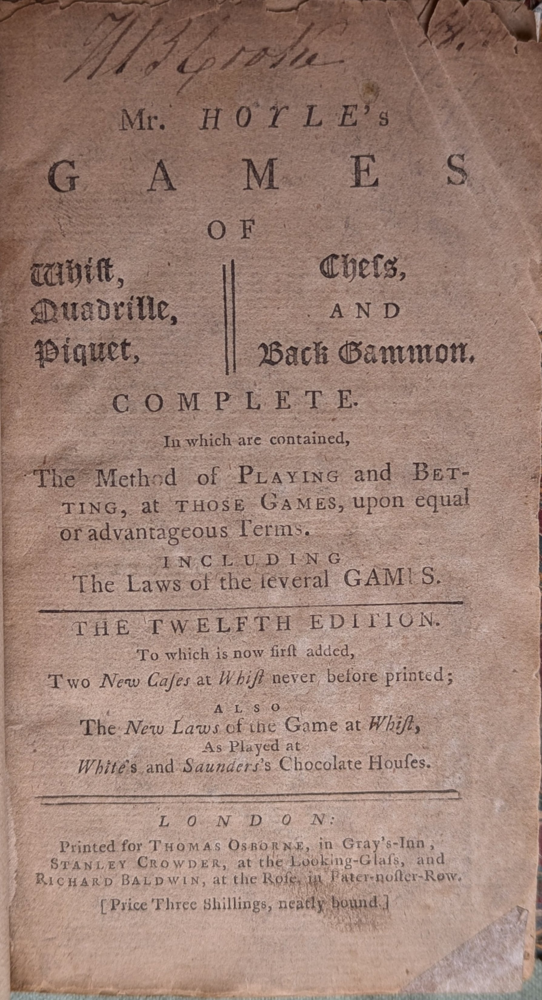

 |
Title: |
Mr. HOYLE's | GAMES | OF | [3 lines to left of double rule] Whiſt, | Quadrille, | Piquet, | [3 lines to right of double rule] Cheſs, | AND | Back Gammon. | COMPLETE. | In which are contained, | The Method of Playing and Bet-|ting, at those Games, upon equal, | or advantageous Terms. | INCLUDING | The Laws of the ſeveral GAMES.
|
[rule] | THE TWELFTH EDITION. | To which is now firſt added,
| Two New Caſes at Whiſt, never before printed; | ALSO | The New Laws of the Game at Whiſt, | As Played at | White's and Saunders's Chocolate-Houſes. | [double rule] | LONDON: | Printed for Thomas Osborne, in Gray's-Inn, | Stanley Crowder, at the Looking-Glaſs, and | Richard Baldwin, at the Roſe, in Pater-noſter-Row. | {Price Three
Shillings, neatly bound.} |
| Collation: |
12o: A–S6 T6(−T6 missing, blank?) [$1–3 signed]; 113 leaves, pp. [i–ii] iii–xii, [1] 2–86 [87–89] 90–115 [116–119] 120–152 [153] 154–168 [169–171] 172–214 |
| Section Title Quadrille |
[row of type orn] | A SHORT | TREATISE | On the GAME of | QUADRILLE;
| SHEWING | The Odds of winning or loſing moſt Games |that are commonly
played, either by calling | a King, or by playing Sans Prendre. | To which are added, | The LAWS of the GAME. | The Fourth Edition. | By Edmond Hoyle, Gent. | [row of type orn] |
| Section Title Piquet and Chess |
[row of type orn] | A SHORT | TREATISE | On the GAME of | PIQUET; |
DIRECTING, | With moral Certainty, how to diſcard any | Hand to Advantage,
by ſhewing the Chances | of taking in any one, two, three, four, or | five
certain Cards. | Computations for thoſe who Bet their | Money at the Game. | ALSO | The LAWS of the GAME. | To which are added, | Some Rules and Observations for play-|ing well at CHESS. | The Fourth Edition. | By Edmond Hoyle, Gent. | [row of type orn] |
| Section Title Backgammon |
[row of type orn] | A SHORT | TREATISE | On the GAME of |
BACK-GAMMON. | CONTAINING | [12 lines to left of double rule] A Table of the thirty-ſix | Chances, with Directions | how to find out the
Odds | of being hit, upon ſingle, | or double Dice. | Rules whereby a
Beginner | may, with due Attention | to them, attain playing | it well. |
The ſeveral Stages for car-|rying your Men home, in | order to loſe no
Point. [12 lines to right of double rule] How to find out who is | forwardeſt
to win a Hit. | Caſes ſtated for Back-| Games, with Directions
| how to play for one. | Caſes ſtated, how to know | when you may have | the better
of ſaving a
| Gammon by running. | Variety of Caſes of Curi-|oſity and Inſtruction. | The
Laws of the Game. | The Fifth Edition. | By Edmond Hoyle, Gent. | [row of type orn] |
| Contents: |
Signature (Page) Reference |
Contents |
Signature (Page) Reference |
Running Titles |
| A1r (i) |
title |
|
|
| A1v (ii) |
‘ADVERTISEMENT. | [...]’ |
|
|
| A2r–A6v (iii–xii) |
‘[double rule] | The | CONTENTS. | [...]’ |
A2v–A6v (iv–xii) |
‘The CONTENTS.’ |
| B1r–I1v (1–86) |
‘[double rule] | A SHORT | TREATISE | On the GAME of | WHIST. |
[...]’ |
B1v–I1r (2–85) |
‘A ſhort Treatise on | the Game of WHIST.’ |
|
|
I1v (86) |
‘A ſhort Treatise, &c.’ |
| I2r (87) |
section title Quadrille |
|
|
| I2v (88) |
blank |
|
|
| I3r–L4r (89–115) |
‘[double rule] | A SHORT | TREATISE | On the GAME of | QUADRILLE. |
[...]’ |
I3v–L4r (90–115) |
‘A ſhort Treatise on the | Game of QUADRILLE.’ |
| L4v (116) |
blank |
|
|
| L5r (117) |
section title Piquet and Chess |
|
|
| L5v (118) |
blank |
|
|
| L6r–O4v (119–152) |
‘[double rule] | A | TREATISE | On the GAME of | PIQUET. |
[...]’ |
L6v–O4v (120–152) |
‘A Treatise on PIQUET.’ |
| O5r–P6v (153–168) |
‘[double rule] | SOME | Rules and Observations | FOR | Playing well at CHESS. | [...]’ |
O5v–P6r (154–167) |
‘Rules and Observations | for Playing at CHESS.’ |
|
|
on P6r (167) |
‘for playing at CHESS.’ |
|
|
P6v (168) |
‘Rules and Observations, &c.’ |
| Q1r (169) |
section title Backgammon |
|
|
| Q1v (170) |
blank |
|
|
| Q2r–T4v (171–212) |
‘[double rule] | A SHORT | TREATISE | On the GAME of | BACK-GAMMON.
| [...]’ |
Q2v–T4v (172–212) |
‘A ſhort Treatise on the | Game of BACK-GAMMON.’ |
| T5r–T5v (213–214) |
‘Two New CASES at WHIST, | Added ſince this Book was printed off. | [...]’ |
|
|
| Catchwords: |
A5r(ix) Calcu- [Calculations,]; A6r(xi) another [Odds,]; K5v(106) X. [IX.]; O5v(154) VII. [VIII.]; P1v(158) Game, [Game.] |
| Price: |
3s. (title) |
| References: |
ESTC T88033, Horr 658, Jessel 804 (without separate entries for the authorized book and the various piracies) , Rather 41 (without separate entries for the authorized book and the various piracies) |
| Copies Seen: |
BFl [I.795/HOYL (b1124762)]; L [7920.aa.34] (ECCO) (Google) (lacking gathering O); O [Jessel f.557]; O [Jessel f.558]; Copisarow; NvLN [GV1241 H69 1761?]; TNJ [GV1241.H8 M12 c.1]; TNJ [GV1241.H8 M12 c.2]; Levy [1119] (lacking gathering B); Levy [2212] |
| Other Copies: |
LEu [Sport HOY]; CaOLU [GV1241.H8 copy 2] |
| Notes: |
This book and two similar "twelfth" editions, Games.3.P.2 and Games.3.P.3 are reprints of the authorized "twelfth" edition, Games.3. They have the same text, including the new material first added in Games.3, but omitting the material first added in the "thirteenth" edition, Games.4. Yet, there are important differences. The reprints lack to note "To the Reader"
on the verso of the
title page and are not autographed by Hoyle and Osborne. They are undoubtedly
piracies. The reprints are duodecimos in sixes, while the authorized edition is in twelves.
The errata
on pages 212 and 214 of the original are corrected in the text of the three rerpints.
The title page, a single leaf outside a
gathering in the original (π1), is integral to the first gathering (A1), but the
number of pages does
not change because the three reprints omit the section title for whist. The four title pages are different settings of type. Indeed the type of each of the
A through T
gatherings is different from the authorized versions and from each other. With
the exception of
copies noted below, it appears that the reprints do not mix gatherings, that is
Games.3.P.1 always has one set of gatherings, Games.3.P.2 another, and Games.3.P.3 a third. The different setting of type are documented here and illustrated here, both in PDF format.There are some oddities with gathering B. In O [Jessel f.558], CaOLU [GV1241.H8 copy
2],
NvLN [GV1241 H69 1761?], TNJ [GV1241.H8 M12 c.2], and Levy [2212], gathering B
is the type normally found in Games.3.P.2. Gathering B is missing altogether in Levy [1119]. |